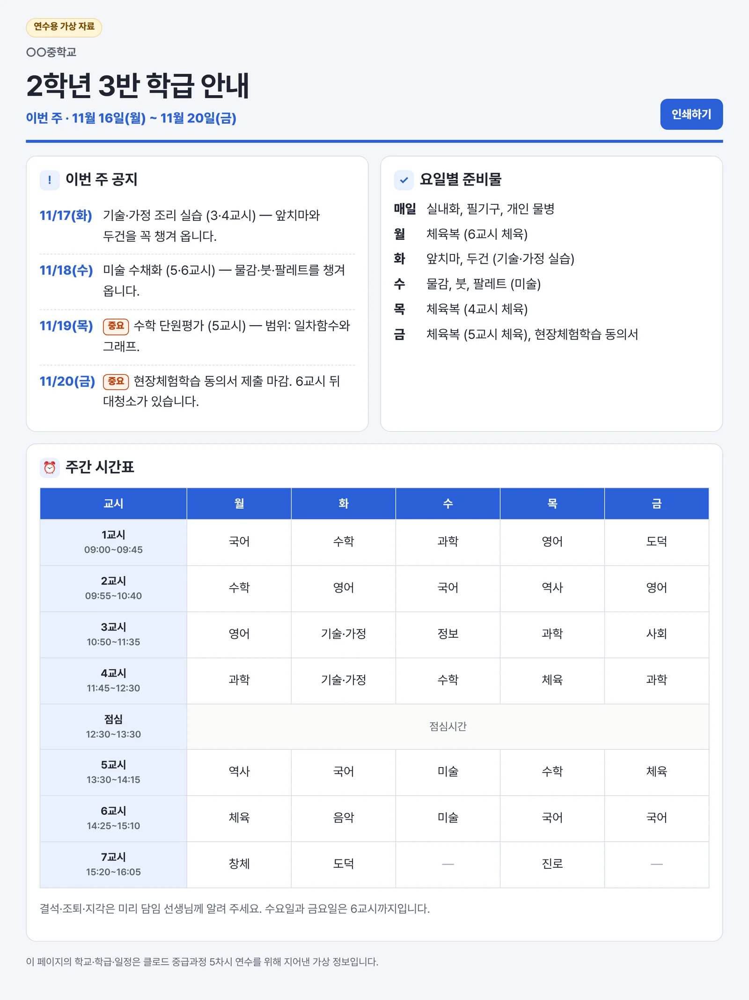
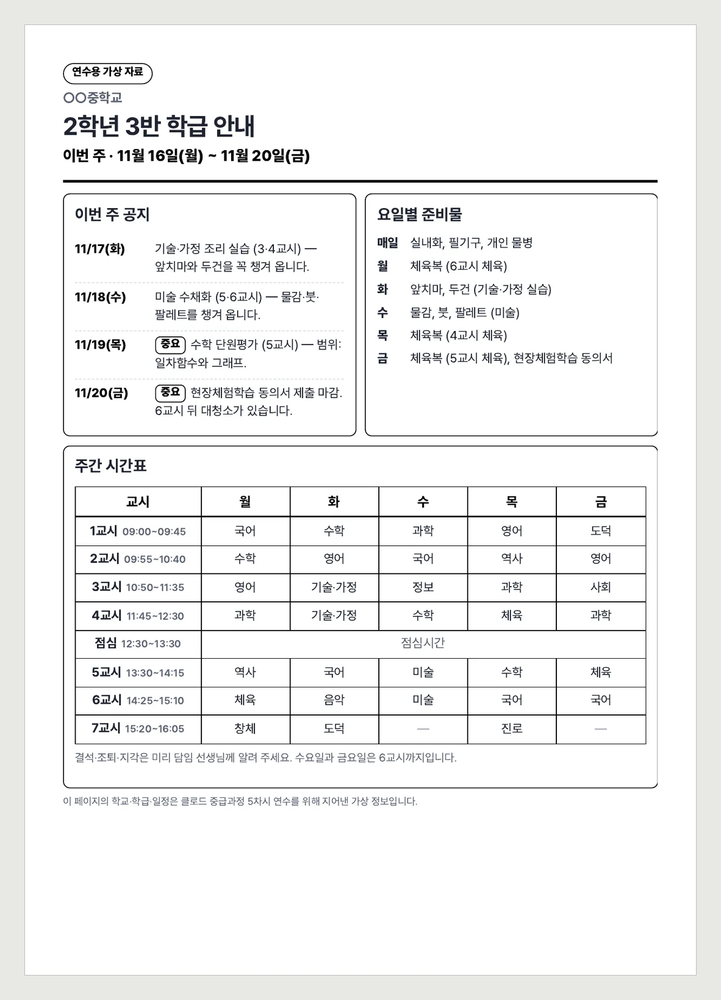

클로드 코드 시작하기
데스크톱 앱의 Code 탭을 처음 열어, 학급 안내 웹페이지 한 장을 내 폴더에 만듭니다. 따로 설치할 것은 없습니다.
- 목표
- 이번 주 공지·시간표·준비물을 담은 학급 안내 웹페이지 한 장을 만들고, 화면과 인쇄 모양을 확인한다 (예시: 중학교 담임 — 2학년 3반 학급 안내, 모든 정보는 가상)
- 준비물
클로드연수안에 만든 빈5차시폴더, 클로드 데스크톱 앱 (Code 탭은 따로 설치하지 않음)- 결과물
index.html한 파일 — 인터넷 없이 열림, 휴대폰 화면과 A4 인쇄 모양까지- 주의
- 실제 학생 이름·연락처는 넣지 않기 · 8차시에 인터넷에 올리면 누구나 봄
코워크가 문서·표·발표자료를 만들어 주었다면, 클로드 코드는 내 폴더 안에서 파일을 만들고 고치고 실행하는 도구입니다. 이 연수에서는 웹페이지·게임·발표자료를 만드는 데 씁니다. 이 차시의 목표는 결과물보다 Code 탭의 화면 구성과 Manual 모드(파일을 만들거나 고치기 전에 묻는 방식)에 익숙해지는 것입니다. 6~10차시의 시뮬레이터·게임·발표자료도 모두 같은 순서로 만듭니다: 폴더 고르기 → 요청 → 승인 → 브라우저 창에서 확인 → 하나씩 고치기.
먼저 볼 영상
 25:31
먼저 볼 영상클로드 코드 사용법 1강 : 설치 방법과 용어 정리, 비개발자용(2026년 11월 최신)카일스쿨 · 유튜브윈도우·맥에서 클로드 코드를 설치하는 방법과 용어를 비개발자 눈높이로 정리합니다. 이 차시의 «선택 · 명령줄(터미널)에서도 쓰기»와 함께 보세요.
25:31
먼저 볼 영상클로드 코드 사용법 1강 : 설치 방법과 용어 정리, 비개발자용(2026년 11월 최신)카일스쿨 · 유튜브윈도우·맥에서 클로드 코드를 설치하는 방법과 용어를 비개발자 눈높이로 정리합니다. 이 차시의 «선택 · 명령줄(터미널)에서도 쓰기»와 함께 보세요.
 12:17
먼저 볼 영상[AI와 수업 준비 5] 클로드 코드, 윈도우에 처음부터 — 설치 · PATH · 인증코드유니버스 · 유튜브교사 연재 «AI와 수업 준비» 5편. 아무것도 깔지 않은 윈도우에 설치하며 막히는 곳(PATH·인증)까지 보여 줍니다.
12:17
먼저 볼 영상[AI와 수업 준비 5] 클로드 코드, 윈도우에 처음부터 — 설치 · PATH · 인증코드유니버스 · 유튜브교사 연재 «AI와 수업 준비» 5편. 아무것도 깔지 않은 윈도우에 설치하며 막히는 곳(PATH·인증)까지 보여 줍니다.
두 영상은 명령줄(터미널) 설치를 중심으로 다룹니다. 이 차시의 실습은 설치가 필요 없는 Code 탭으로 하고, 영상의 설치 과정은 아래 «선택 · 명령줄(터미널)에서도 쓰기»에서 따라 합니다.
1 준비
클로드연수안에 빈 폴더5차시를 만듭니다.- 데스크톱 앱을 설치하고 유료 플랜 계정으로 로그인했는지 확인합니다(연수 전 점검 1·2번). Code 탭은 데스크톱 앱 안에 들어 있어 Node.js 나 명령줄 프로그램을 따로 깔지 않습니다.
- 학교 PC라면 연수 전 점검 4번의 «기관 계정 제한»도 확인합니다.
2 따라 하기
번호 순서대로 진행합니다. 프롬프트가 필요한 단계에는 바로 아래에 복사 단추가 있습니다.
- 데스크톱 앱 사이드바 맨 위의 Code 탭을 누릅니다. 탭이 아이콘으로만 보이면 마우스를 올려 이름을 확인합니다.
캡처 넣을 곳 · L05-1
Code 탭을 처음 연 화면 (따라 하기 1~2번).- 빨간 상자: 사이드바 맨 위의 Code 탭
- 번호 표시: 프롬프트 상자 아래 줄의 ① 환경 ② 폴더 ③ 권한 모드 ④ 모델
- 프롬프트 상자 아래 줄을 봅니다. 왼쪽부터 환경(어디에서 실행할지) · 폴더(어느 폴더에서 일할지) · 권한 모드(얼마나 묻고 할지) · 모델 입니다. 첫 단추(환경)를 눌러 Local 묶음의 맨 위 항목(내 컴퓨터)을 고릅니다.
- 그 옆 폴더 단추에서 Open folder… 를 눌러
클로드연수/5차시를 고릅니다. 클로드는 이 폴더를 작업 폴더로 삼아 파일을 만듭니다. - 권한 모드 단추를 눌러 Manual 로 바꿉니다. Manual 에서는 클로드가 파일을 만들거나 고치기 전, 명령을 실행하기 전에 바뀔 내용을 보여 주고 묻습니다.
권한 모드는 넷입니다. Auto — 묻지 않고 진행하되, 명령 실행 같은 동작은 요청과 맞는지 자동으로 점검합니다. Manual — 하나씩 묻습니다. Accept edits — 파일 고치기는 바로 하고 다른 명령은 묻습니다. Plan — 파일을 고치지 않고 계획만 세웁니다(6·7차시). 목록에 보이는 모드는 계정과 기관 설정에 따라 다를 수 있습니다. 앱은 폴더마다 마지막에 고른 모드를 기억하니, 첫 메시지를 보내기 전에 한 번 더 확인합니다.
- 아래 프롬프트를 보내 만들기를 맡깁니다. 클로드가 할 일을 짧게 말한 뒤, 파일을 만들기 전에 바뀔 내용과 승인·거절 단추를 보여 줍니다. 내용을 훑어보고 승인합니다.
2학년 3반 학급 안내 웹페이지를 한 장 만들어 주세요. 모든 내용은 연수용 가상 정보입니다. 요구 사항 - index.html 한 파일. 외부 라이브러리·글꼴·인터넷 없이 열려야 함 - 맨 위: ○○중학교, 2학년 3반 학급 안내, 이번 주 날짜, «연수용 가상 자료» 표시 - 이번 주 공지 (날짜와 함께) - 주간 시간표 표: 월~금, 교시마다 시작·끝 시각 - 요일별 준비물 - 휴대폰에서도 보기 좋게, 글자는 크게 - 인쇄하면 A4 한 장에 흑백으로도 잘 보이게 (인쇄 단추 포함, 인쇄할 때는 단추 숨기기) 내용은 아래 것만 쓰고, 없는 내용은 지어내지 마세요. 이번 주: 11월 16일(월) ~ 11월 20일(금) 공지 - 11/17(화) 기술·가정 조리 실습 (3·4교시), 앞치마와 두건 - 11/18(수) 미술 수채화 (5·6교시), 물감·붓·팔레트 - 11/19(목) 수학 단원평가 (5교시), 범위: 일차함수와 그래프 - 11/20(금) 현장체험학습 동의서 제출 마감, 6교시 뒤 대청소 시간표 (월 / 화 / 수 / 목 / 금) 1교시 09:00~09:45: 국어 / 수학 / 과학 / 영어 / 도덕 2교시 09:55~10:40: 수학 / 영어 / 국어 / 역사 / 영어 3교시 10:50~11:35: 영어 / 기술·가정 / 정보 / 과학 / 사회 4교시 11:45~12:30: 과학 / 기술·가정 / 수학 / 체육 / 과학 점심 12:30~13:30 5교시 13:30~14:15: 역사 / 국어 / 미술 / 수학 / 체육 6교시 14:25~15:10: 체육 / 음악 / 미술 / 국어 / 국어 7교시 15:20~16:05: 창체 / 도덕 / 없음 / 진로 / 없음 준비물: 매일 실내화·필기구·개인 물병, 체육이 있는 날 체육복, 화요일 앞치마·두건, 수요일 물감·붓·팔레트, 금요일 동의서
시간표와 공지를 직접 주고 «지어내지 마세요»를 붙이는 것이 핵심입니다. 주지 않은 행사나 날짜를 그럴듯하게 채우는 일을 막습니다. «인터넷 없이»를 적어 두면 학교망에서 막힐 수 있는 외부 글꼴·라이브러리를 쓰지 않습니다. «인쇄하면 A4 한 장»은 가정통신문처럼 종이로도 나눌 수 있게 합니다.
캡처 넣을 곳 · L05-2
승인을 묻는 화면 (따라 하기 5번).- 빨간 상자: 승인 단추
- 만들 파일 이름(
index.html)과 바뀔 내용이 보이게
- 다 만들면 대화창에 나온
index.html경로를 누릅니다. 앱 안 브라우저 창에서 페이지가 열립니다. 창의 가장자리를 끌어 너비를 좁히면 휴대폰에서 보이는 모양도 볼 수 있습니다.캡처 넣을 곳 · L05-3
앱 안 브라우저 창 (따라 하기 6번).- 빨간 상자: 대화창의
index.html경로와 브라우저 창
- 빨간 상자: 대화창의
- 고칠 점은 한 번에 하나씩 요청합니다.
이번 주 공지 중 시험과 제출 마감이 있는 줄 앞에 «중요» 표시를 붙이고 눈에 띄게 해 주세요. 다른 곳은 바꾸지 마세요. 고친 뒤 브라우저 창에서 다시 확인해 주세요.
여러 가지를 한꺼번에 요청하면 무엇이 바뀌었는지 확인하기 어렵습니다. 하나 고치고 브라우저 창에서 본 뒤 다음을 요청합니다. 다른 예: «시간표에서 체육 칸은 연한 초록 바탕으로 해 주세요», «방금 바꾼 것을 되돌려 주세요». 클로드가 일하는 도중에도 중지 단추로 멈추거나, 입력해서 방향을 바꿀 수 있습니다.
- 파일 탐색기(맥은 Finder)에서
5차시/index.html을 더블클릭하면 크롬·엣지에서 열립니다. Ctrl+P(맥은 ⌘+P)로 인쇄 미리보기를 열어 A4 한 장에 들어가는지 봅니다.
선택 · 명령줄(터미널)에서도 쓰기
Code 탭만으로 이 연수의 모든 차시를 할 수 있습니다. 명령줄의 클로드 코드는 영상이나 다른 자료에서 자주 보는 방식이라, 따라 해 보고 싶은 분만 합니다. 같은 유료 플랜 계정으로 로그인해 씁니다. 윈도우 10(1809 이상) 또는 macOS 13 이상이 필요하고, 관리자 권한은 필요 없습니다. 학교 PC에서 설치가 막히면 정보 담당 선생님께 문의하거나 Code 탭만 씁니다.
- 터미널을 엽니다.
윈도우 — Win+X 를 눌러 Windows PowerShell 또는 터미널을 고릅니다(«관리자»가 붙지 않은 항목). 줄 앞에PS C:\Users\…>가 보이면 PowerShell 입니다.
맥 — ⌘+Space 로 Spotlight 를 열고Terminal을 입력해 Enter. - (윈도우, 선택) Git for Windows 는 깔지 않아도 됩니다. 없으면 클로드 코드가 PowerShell 로 명령을 실행합니다. 깔고 싶다면 git-scm.com/downloads/win 에서 받아 화면마다 기본 설정 그대로 Next 를 누릅니다.
- 내 컴퓨터에 맞는 설치 명령 하나만 복사해 터미널에 붙여 넣고 Enter. 내려받는 동안 진행 표시가 없으니 창을 닫지 말고 기다립니다. «Claude Code successfully installed!» 가 나오면 끝입니다.
irm https://claude.ai/install.ps1 | iex
curl -fsSL https://claude.ai/install.cmd -o install.cmd && install.cmd && del install.cmd
curl -fsSL https://claude.ai/install.sh | bash
다른 방법도 있습니다. 아래 두 방법은 자동으로 업데이트되지 않으니 가끔
winget upgrade Anthropic.ClaudeCode또는brew upgrade claude-code를 실행합니다. 위의 기본 설치 명령으로 깔면 자동으로 업데이트됩니다.winget install Anthropic.ClaudeCode
brew install --cask claude-code
캡처 넣을 곳 · L05-4
터미널 설치 화면 — 선택 과정 (명령줄 3~4번).- 설치 명령과 «Claude Code successfully installed!» 문구가 보이게
- 새 창에서
claude --version을 입력해 버전 번호가 나온 모습
- 터미널 창을 닫고 새 창을 연 뒤 아래 명령을 입력합니다.
2.1.211 (Claude Code)처럼 버전 번호가 나오면 설치된 것입니다(숫자는 다를 수 있습니다).claude --version
- 연습할 새 폴더(예:
클로드연수/5차시-터미널)를 만들고 그 폴더로 이동합니다.cd와 빈칸 하나를 입력한 뒤, 파일 탐색기(Finder)에서 그 폴더를 터미널 창으로 끌어다 놓으면 경로가 들어갑니다. Enter. - 아래 명령으로 시작합니다. 처음에는 브라우저가 열려 클로드 계정으로 로그인합니다. 그다음에는 Code 탭처럼 요청하면 됩니다. 프롬프트 1을 붙여 넣어 보세요. 파일을 만들기 전에 물으면 Enter 로 승인(Yes)합니다. Esc 로 멈추고,
exit로 끝냅니다.claude
3 결과 예시


4 검증 포인트
② 지어낸 내용 — 주지 않은 행사·이름·전화번호·주소가 들어가지 않았는지 봅니다.
③ 날짜와 요일 — 날짜 옆 요일이 달력과 맞는지 봅니다. 2026년 11월 16일은 월요일입니다.
④ 인쇄 — 인쇄 미리보기에서 A4 한 장에 들어가는지, 인쇄 단추가 숨겨지는지, 흑백으로도 읽히는지 봅니다.
⑤ 휴대폰 화면 — 브라우저 창을 좁혀 표가 화면 밖으로 넘치지 않는지 봅니다.
⑥ 인터넷 없이 — 와이파이를 끄고 파일을 열어도 모양이 그대로인지 봅니다.
⑦ 개인정보 — 실제로 쓸 때도 학생 이름·연락처·사진은 넣지 않습니다. 8차시에서 인터넷에 올리면 주소를 아는 누구나 볼 수 있습니다.
5 다른 교과에 적용하기
따라 하기 5단계 프롬프트 1 대신 아래 교과 프롬프트를 씁니다. 나머지 단계는 같습니다. 프롬프트 맨 아래 [여기에 내용 붙여 넣기] 자리에 교사가 확인한 내용(일정·목록·기준 등)을 붙여 넣습니다. 빈 곳은 클로드가 지어내지 않고 [채울 곳]으로 남기게 해 두었습니다. 교과를 눌러 펼친 뒤 복사합니다.
국어한 학기 한 권 읽기책 고르는 기준, 읽기 일정표, 독서 기록 방법
중학교 국어 '한 학기 한 권 읽기' 안내 웹페이지를 한 장 만들어 주세요. 요구 사항 - index.html 한 파일. 외부 라이브러리·글꼴·인터넷 없이 열려야 함 - 책 고르는 기준과 추천 목록 표 (제목 · 지은이 · 한 줄 소개) - 주차별 읽기 일정표 - 독서 기록장 쓰는 방법과 평가 기준 표 - 휴대폰에서도 보기 좋게, 글자는 크게 - 인쇄하면 A4 한 장에 흑백으로도 잘 보이게 (인쇄 단추 포함, 인쇄할 때는 단추 숨기기) 내용은 아래에 붙인 것만 쓰고, 없는 내용은 지어내지 말고 [채울 곳]으로 남겨 주세요. 다 만들면 앱 안 브라우저 창에서 열어 확인해 주세요. [여기에 내용 붙여 넣기]
수학일차함수 공식 한 장 정리공식·예제·자주 하는 실수를 한 장에
중학교 수학 '일차함수 공식 한 장 정리' 안내 웹페이지를 한 장 만들어 주세요. 요구 사항 - index.html 한 파일. 외부 라이브러리·글꼴·인터넷 없이 열려야 함 - 공식마다 뜻 한 줄과 예제 하나 - «자주 하는 실수» 상자 - 수식은 그림 없이 글자로 쓰기 (예: y = 2x − 1) - 휴대폰에서도 보기 좋게, 글자는 크게 - 인쇄하면 A4 한 장에 흑백으로도 잘 보이게 (인쇄 단추 포함, 인쇄할 때는 단추 숨기기) 내용은 아래에 붙인 것만 쓰고, 없는 내용은 지어내지 말고 [채울 곳]으로 남겨 주세요. 다 만들면 앱 안 브라우저 창에서 열어 확인해 주세요. 예제의 답은 다시 계산해서 맞는지 알려 주세요. 틀린 답은 고치지 말고 알려 주세요. [여기에 내용 붙여 넣기]
영어이번 단원 단어장단어·뜻·예문 표, 뜻 가리기 단추
중학교 영어 '이번 단원 단어장' 안내 웹페이지를 한 장 만들어 주세요. 요구 사항 - index.html 한 파일. 외부 라이브러리·글꼴·인터넷 없이 열려야 함 - 단어 표 (단어 · 뜻 · 예문) - «뜻 가리기 / 보이기» 단추로 외우기 연습 - 인쇄할 때는 뜻이 모두 보이게 - 휴대폰에서도 보기 좋게, 글자는 크게 - 인쇄하면 A4 한 장에 흑백으로도 잘 보이게 (인쇄 단추 포함, 인쇄할 때는 단추 숨기기) 내용은 아래에 붙인 것만 쓰고, 없는 내용은 지어내지 말고 [채울 곳]으로 남겨 주세요. 다 만들면 앱 안 브라우저 창에서 열어 확인해 주세요. [여기에 내용 붙여 넣기]
과학실험실 안전 수칙안전 수칙, 사고가 났을 때 순서, 실험별 준비물
중학교 과학 '실험실 안전 수칙' 안내 웹페이지를 한 장 만들어 주세요. 요구 사항 - index.html 한 파일. 외부 라이브러리·글꼴·인터넷 없이 열려야 함 - 실험실 안전 수칙 (번호를 붙여 짧게) - 사고가 났을 때 할 일 순서 (붙인 학교 지침만) - 이번 학기 실험별 준비물 표 - 휴대폰에서도 보기 좋게, 글자는 크게 - 인쇄하면 A4 한 장에 흑백으로도 잘 보이게 (인쇄 단추 포함, 인쇄할 때는 단추 숨기기) 내용은 아래에 붙인 것만 쓰고, 없는 내용은 지어내지 말고 [채울 곳]으로 남겨 주세요. 다 만들면 앱 안 브라우저 창에서 열어 확인해 주세요. [여기에 내용 붙여 넣기]
사회현장체험학습 안내일정표, 모이는 곳, 준비물, 주의 사항
중학교 사회 '현장체험학습 안내' 안내 웹페이지를 한 장 만들어 주세요. 요구 사항 - index.html 한 파일. 외부 라이브러리·글꼴·인터넷 없이 열려야 함 - 일정표 (시간 · 장소 · 활동) - 모이는 곳과 시간, 준비물, 주의 사항 - 학생 명단·연락처는 넣지 않기 - 휴대폰에서도 보기 좋게, 글자는 크게 - 인쇄하면 A4 한 장에 흑백으로도 잘 보이게 (인쇄 단추 포함, 인쇄할 때는 단추 숨기기) 내용은 아래에 붙인 것만 쓰고, 없는 내용은 지어내지 말고 [채울 곳]으로 남겨 주세요. 다 만들면 앱 안 브라우저 창에서 열어 확인해 주세요. [여기에 내용 붙여 넣기]
역사박물관 탐방 활동관람 순서, 전시실별 찾아볼 것, 활동 질문
중학교 역사 '박물관 탐방 활동' 안내 웹페이지를 한 장 만들어 주세요. 요구 사항 - index.html 한 파일. 외부 라이브러리·글꼴·인터넷 없이 열려야 함 - 관람 순서와 전시실별 «찾아볼 것» - 전시실마다 활동 질문 2개 (답을 적을 빈칸) - 유물 설명은 붙인 자료에 있는 것만 - 휴대폰에서도 보기 좋게, 글자는 크게 - 인쇄하면 A4 한 장에 흑백으로도 잘 보이게 (인쇄 단추 포함, 인쇄할 때는 단추 숨기기) 내용은 아래에 붙인 것만 쓰고, 없는 내용은 지어내지 말고 [채울 곳]으로 남겨 주세요. 다 만들면 앱 안 브라우저 창에서 열어 확인해 주세요. [여기에 내용 붙여 넣기]
도덕학급 토론 안내토론 규칙, 역할, 진행 순서, 평가 기준
중학교 도덕 '학급 토론 안내' 안내 웹페이지를 한 장 만들어 주세요. 요구 사항 - index.html 한 파일. 외부 라이브러리·글꼴·인터넷 없이 열려야 함 - 토론 규칙과 역할 (사회자 · 찬성 · 반대 · 판정) - 진행 순서와 시간 표 - 평가 기준 표 - 휴대폰에서도 보기 좋게, 글자는 크게 - 인쇄하면 A4 한 장에 흑백으로도 잘 보이게 (인쇄 단추 포함, 인쇄할 때는 단추 숨기기) 내용은 아래에 붙인 것만 쓰고, 없는 내용은 지어내지 말고 [채울 곳]으로 남겨 주세요. 다 만들면 앱 안 브라우저 창에서 열어 확인해 주세요. [여기에 내용 붙여 넣기]
기술·가정조리 실습 안내모둠별 준비물, 실습 순서, 위생·안전 수칙
중학교 기술·가정 '조리 실습 안내' 안내 웹페이지를 한 장 만들어 주세요. 요구 사항 - index.html 한 파일. 외부 라이브러리·글꼴·인터넷 없이 열려야 함 - 모둠별 준비물 표와 실습 순서 - 위생·안전 수칙 - 알레르기가 있으면 미리 알려 달라는 안내 (학생 개인 정보는 넣지 않기) - 휴대폰에서도 보기 좋게, 글자는 크게 - 인쇄하면 A4 한 장에 흑백으로도 잘 보이게 (인쇄 단추 포함, 인쇄할 때는 단추 숨기기) 내용은 아래에 붙인 것만 쓰고, 없는 내용은 지어내지 말고 [채울 곳]으로 남겨 주세요. 다 만들면 앱 안 브라우저 창에서 열어 확인해 주세요. [여기에 내용 붙여 넣기]
정보수행평가 안내과제 설명, 일정, 채점 기준표, 제출 방법
중학교 정보 '수행평가 안내' 안내 웹페이지를 한 장 만들어 주세요. 요구 사항 - index.html 한 파일. 외부 라이브러리·글꼴·인터넷 없이 열려야 함 - 과제 설명과 일정 - 채점 기준표 (기준 · 점수) - 제출 방법과 자주 묻는 질문 - 휴대폰에서도 보기 좋게, 글자는 크게 - 인쇄하면 A4 한 장에 흑백으로도 잘 보이게 (인쇄 단추 포함, 인쇄할 때는 단추 숨기기) 내용은 아래에 붙인 것만 쓰고, 없는 내용은 지어내지 말고 [채울 곳]으로 남겨 주세요. 다 만들면 앱 안 브라우저 창에서 열어 확인해 주세요. [여기에 내용 붙여 넣기]
음악학급 합창 대회 안내곡, 연습 일정, 당일 순서
중학교 음악 '학급 합창 대회 안내' 안내 웹페이지를 한 장 만들어 주세요. 요구 사항 - index.html 한 파일. 외부 라이브러리·글꼴·인터넷 없이 열려야 함 - 부를 곡과 연습 일정 표 - 파트를 나누는 방법 (학생 명단은 넣지 않기) - 대회 당일 순서와 준비물 - 휴대폰에서도 보기 좋게, 글자는 크게 - 인쇄하면 A4 한 장에 흑백으로도 잘 보이게 (인쇄 단추 포함, 인쇄할 때는 단추 숨기기) 내용은 아래에 붙인 것만 쓰고, 없는 내용은 지어내지 말고 [채울 곳]으로 남겨 주세요. 다 만들면 앱 안 브라우저 창에서 열어 확인해 주세요. [여기에 내용 붙여 넣기]
미술학년 작품 전시회 안내전시 주제, 기간·장소, 관람 예절, 감상 질문
중학교 미술 '학년 작품 전시회 안내' 안내 웹페이지를 한 장 만들어 주세요. 요구 사항 - index.html 한 파일. 외부 라이브러리·글꼴·인터넷 없이 열려야 함 - 전시 주제, 기간, 장소 - 관람 예절과 작품 감상 질문 3개 - 학생 이름과 작품 사진은 넣지 않기 - 휴대폰에서도 보기 좋게, 글자는 크게 - 인쇄하면 A4 한 장에 흑백으로도 잘 보이게 (인쇄 단추 포함, 인쇄할 때는 단추 숨기기) 내용은 아래에 붙인 것만 쓰고, 없는 내용은 지어내지 말고 [채울 곳]으로 남겨 주세요. 다 만들면 앱 안 브라우저 창에서 열어 확인해 주세요. [여기에 내용 붙여 넣기]
체육학교 스포츠클럽 안내종목별 일정표, 규칙 요약, 준비물, 안전 수칙
중학교 체육 '학교 스포츠클럽 안내' 안내 웹페이지를 한 장 만들어 주세요. 요구 사항 - index.html 한 파일. 외부 라이브러리·글꼴·인터넷 없이 열려야 함 - 종목별 일정표 (요일 · 시간 · 장소) - 종목마다 경기 규칙 요약 - 준비물과 안전 수칙 - 휴대폰에서도 보기 좋게, 글자는 크게 - 인쇄하면 A4 한 장에 흑백으로도 잘 보이게 (인쇄 단추 포함, 인쇄할 때는 단추 숨기기) 내용은 아래에 붙인 것만 쓰고, 없는 내용은 지어내지 말고 [채울 곳]으로 남겨 주세요. 다 만들면 앱 안 브라우저 창에서 열어 확인해 주세요. [여기에 내용 붙여 넣기]
진로진로 체험의 날 안내프로그램 표, 신청 방법, 체험 기록 질문
중학교 진로 '진로 체험의 날 안내' 안내 웹페이지를 한 장 만들어 주세요. 요구 사항 - index.html 한 파일. 외부 라이브러리·글꼴·인터넷 없이 열려야 함 - 프로그램 표 (시간 · 장소 · 내용) - 신청 방법과 마감 - 체험 뒤 적을 기록 질문 3개 - 휴대폰에서도 보기 좋게, 글자는 크게 - 인쇄하면 A4 한 장에 흑백으로도 잘 보이게 (인쇄 단추 포함, 인쇄할 때는 단추 숨기기) 내용은 아래에 붙인 것만 쓰고, 없는 내용은 지어내지 말고 [채울 곳]으로 남겨 주세요. 다 만들면 앱 안 브라우저 창에서 열어 확인해 주세요. [여기에 내용 붙여 넣기]
담임학부모 상담 주간 안내상담 기간·방법, 신청 방법, 미리 생각해 볼 질문
중학교 담임 '학부모 상담 주간 안내' 안내 웹페이지를 한 장 만들어 주세요. 요구 사항 - index.html 한 파일. 외부 라이브러리·글꼴·인터넷 없이 열려야 함 - 상담 기간과 방법 (대면 · 전화) - 신청 방법과 마감 - 상담 전에 생각해 볼 질문 3개 - 학생·학부모 개인 정보는 넣지 않기 - 휴대폰에서도 보기 좋게, 글자는 크게 - 인쇄하면 A4 한 장에 흑백으로도 잘 보이게 (인쇄 단추 포함, 인쇄할 때는 단추 숨기기) 내용은 아래에 붙인 것만 쓰고, 없는 내용은 지어내지 말고 [채울 곳]으로 남겨 주세요. 다 만들면 앱 안 브라우저 창에서 열어 확인해 주세요. [여기에 내용 붙여 넣기]
Code 탭은 폴더 고르기 → 요청 → 승인 → 확인 → 하나씩 고치기의 순서로 일합니다. Manual 모드로 시작하면 클로드가 무엇을 바꾸는지 하나하나 보며 익힐 수 있습니다. 내용은 교사가 직접 주고 «지어내지 마세요»를 붙이며, 만든 페이지는 교사가 원본과 대조합니다. 한 파일짜리 웹페이지는 USB로 옮겨도, 인터넷에 올려도(8차시) 그대로 열립니다.
· Code 탭을 누르면 업그레이드 안내가 뜬다 — 유료 플랜이 아닌 계정입니다. 연수 전 점검 1번을 봅니다.
· 온라인 로그인 안내가 뜬다 — 로그인을 마친 뒤 앱을 다시 시작합니다.
· 403 오류가 뜬다 — 로그인 문제입니다. Claude Code 문서의 인증 오류 해결을 봅니다.
· 환경 목록에서 내 컴퓨터가 회색이고 «Disabled by your organization» 이 뜬다 — 기관 관리자가 막은 것입니다. 관리자에게 문의합니다.
· 프롬프트 상자 아래에 환경 단추가 없다 — 앱이 예전 배치입니다. 폴더를 고르는 단추에서 바로
5차시 를 고릅니다.· 묻지 않고 바로 만들었다 — 권한 모드가 Auto 나 Accept edits 입니다. 다음 요청 전에 Manual 로 바꿉니다.
· 앱 안 브라우저 창이 열리지 않는다 — 파일 탐색기에서
index.html 을 더블클릭해 엽니다.· (명령줄)
claude 를 찾을 수 없다·인식되지 않는다 — 설치 폴더가 아직 PATH 에 없습니다. 터미널을 새로 열어 다시 해 보고, 그래도 안 되면 공식 문서의 설치 문제 해결을 봅니다.· (명령줄)
irm 이 인식되지 않는다는 오류 — PowerShell 이 아니라 CMD 입니다. CMD 용 명령을 쓰거나 PowerShell 을 엽니다. 반대로 The token '&&' is not a valid statement separator 가 나오면 PowerShell 에 CMD 용 명령을 넣은 것입니다.
더 보기
 35:18
더 보기교수님들을 위한 클로드 코드 CLI 입문 총정리 영상 | 설치부터 중급 실습까지 36분 총정리 영상필로소피 AI 교육 · 유튜브교육자를 위해 명령줄(CLI) 설치부터 중급 실습까지 36분에 정리합니다.
35:18
더 보기교수님들을 위한 클로드 코드 CLI 입문 총정리 영상 | 설치부터 중급 실습까지 36분 총정리 영상필로소피 AI 교육 · 유튜브교육자를 위해 명령줄(CLI) 설치부터 중급 실습까지 36분에 정리합니다.
 20:14
더 보기클로드 코드 20분 완벽 입문 가이드 | 클로드 설치부터 실전 ppt 제작까지 [학습자료 제공] claude code데키랩 · 유튜브설치부터 PPT 만들기 실습까지 20분에 다룹니다.
20:14
더 보기클로드 코드 20분 완벽 입문 가이드 | 클로드 설치부터 실전 ppt 제작까지 [학습자료 제공] claude code데키랩 · 유튜브설치부터 PPT 만들기 실습까지 20분에 다룹니다.
출처: Claude Code 문서 Get started with the desktop app · Use Claude Code Desktop · Advanced setup · Terminal guide for new users (2026-11-11 확인).